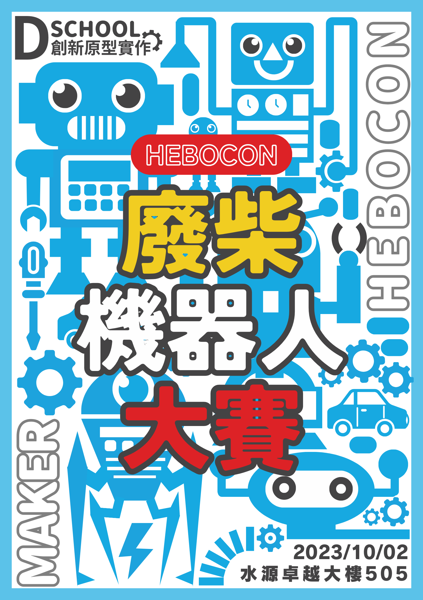

用來形容「技術不純熟，製作粗糙」的人、事、物、狀態。把「廢」當作一種樂趣，這就是廢柴機器人的宗旨。
廢柴機器人沒辦法像樣地移動，稍微碰撞就壞掉，也無法流暢地執行前進。這些機器人雖然在工程學上意點價值也沒有，但跟製作精良的機器人比起來，廢柴機器人卻蘊藏前者所沒有的魅力。 舉例來說，假設在你面前有一個剛滿一歲的嬰兒正搖搖晃晃、步態不穩地蹣跚學步。你是不是也會對於這樣德身姿感到厚愛?廢柴機器人也是一樣喔，配備著無法正常運作的零件，不知怎的開始戰動起來的機器人們，這樣的身姿，你說是不是也很萌(可愛)啊? 此外，廢柴機器人很容易故障。小嬰兒學步石就算失敗跌倒，手腕也不會飛出去，但廢柴機器人只要一倒下，手臂就會脫落，或者應為輪胎加速過快而飛出場外，也有動力馬達一下就無法運作的。廢柴機器人大戰所帶給我們的就是像這樣許許多多扣人心弦、令人興奮的突發事件。
機器人為什麼廢呢?那是因為製造者的技術很廢的關係。低技術力的製造者無法辨別自己實際的製造能力。所以起初都會構思功能齊全的庫選機器人後，就開始動手製作。不久，因為察覺到自己的能力無法實現這樣的機器人，於是乎，開始妥協，改作較簡單的機器人。 然而，連這妥協後的簡版機器人也做不出來，又再一次妥協再妥協。最後的完成品就成了先前提的廢柴機器人。 其他的廢柴製造者有些事做到一辦覺得很麻煩就去做其他雜事的。有些事製造出來的功能一次也沒測試過、做到一辦放棄不做的，還有的是報名了卻沒出賽的。但是，這都沒關係。這才叫做(這就是所謂的)廢柴機器人大戰。 如果你仔細觀柴出場的祭器人，你會看透人類薄弱的環節。這也是廢柴機器人大戰的有趣之處啊。觀看廢柴機器人大戰簡直就像是讀一本私小說一樣。我常說:「廢柴機器人大戰不是工程學而是文學」。
當然可以。去玩具店買個會動的玩具狗，用厚紙板再外觀作點裝飾吧。如此，專屬於你的廢柴機器人就完成啦。把木頭修成角的形狀裝上去吧，這樣戰鬥力就會暴增。更別具新裁的話，也可以裝上會動的武器喔。沒辦法順利運作?OK，這就是「廢」。帶著你無法順利運作的機器人，憶起參賽吧！ 此外，日本有一家叫做"田恭"的玩具製造商有再販售以馬達驅動的簡單工具包。你的國家有有類似的商品嗎?因為這樣的商品容易改造，就製造機器人而言也是理想的素材。或許有可能會因為你多餘的改造而導致這原本好好的套件無法正常運作，OK，這就叫「廢」。一起從「廢」刀中享受樂趣吧！

以上是廢柴機器人大戰本質。最後，廢柴機器人大戰不是一項嚴肅的機器人競賽，不正經地開始比賽吧！不要太計較輸贏，憶起享受過程吧！